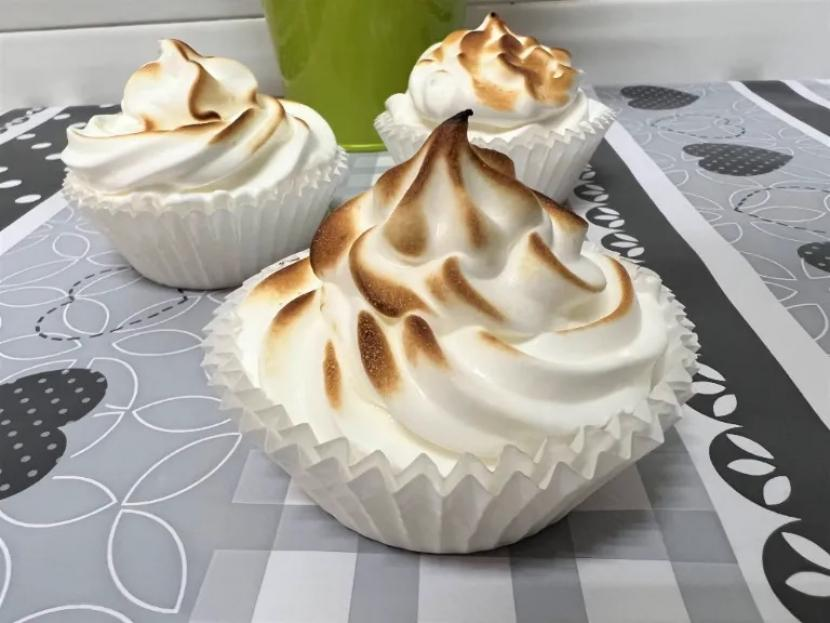

Merenguitos al Horno sobre Natillas

Ingredientes:
Para los merenguitos:
- 4 claras de huevo
- 200 gramos de azúcar
- 1 cucharadita de vinagre blanco
- 1 cucharadita de maicena
Para las natillas:
- 500 ml de leche
- 4 yemas de huevo
- 100 gramos de azúcar
- 1 cucharada de esencia de vainilla
- Canela en polvo para decorar
Tiempos:
- Preparación:20 minutos
- Cocina: 1 hora
- Total: 1:20 horas
Pasos:
- Para hacer los merenguitos, precalentar el horno a 120°C y forrar una bandeja para hornear con papel de horno.
- En un bol grande, batir las claras de huevo con una batidora eléctrica hasta que formen picos suaves.
- Añadir poco a poco el azúcar, batiendo continuamente, hasta que las claras estén firmes y brillantes.
- Añadir el vinagre y la maicena y batir de nuevo durante unos segundos.
- Colocar cucharadas de la mezcla de merengue en la bandeja para hornear, dejando espacio entre ellas.
- Hornear durante unos 60-90 minutos, o hasta que los merenguitos estén crujientes por fuera y suaves por dentro.
- Para hacer las natillas, calentar la leche en una cacerola a fuego medio.
- En un bol aparte, batir las yemas de huevo con el azúcar y la esencia de vainilla hasta que estén suaves y cremosas.
- Añadir un poco de la leche caliente a la mezcla de yemas y mezclar bien.
- Verter la mezcla de yemas en la cacerola con la leche caliente y cocinar a fuego medio-bajo, revolviendo constantemente, hasta que la mezcla se espese lo suficiente como para cubrir el dorso de una cuchara.
- Retirar del fuego y dejar enfriar.
- Para servir, colocar una cucharada grande de natillas en cada plato y cubrir con un merenguito.
- Decorar con un poco de canela en polvo y servir inmediatamente.